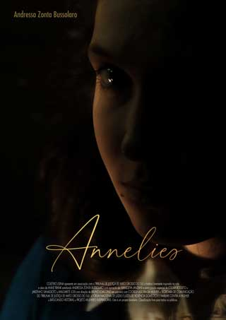

2020 | L | 11 Episódios
A série Annelies faz parte do projeto InspiraCine: Mulheres, idealizado pelo Tribunal de Justiça de Mato Grosso do Sul, através da Coordenadoria da Mulher e da Secretaria de Comunicação. Produzida pelo Coletivo Usina, tem parceria com o projeto Mulheres Inspiradoras, o Batucando Histórias e o FONAVID, com apoio do Conselho Nacional de Justiça e a ONU Mulheres.Dividida em onze episódios, Annelies é livremente inspirado na vida e obra da garota Anne Frank, que registra em um diário sua reclusão forçada pela Segunda Guerra Mundial.

A série cinematográfica Annelies construída em 11 episódios, é uma livre adaptação inspirada na vida e obra de Anne Frank, produzida com uma linguagem diferenciada para ser utilizada pela Coordenadoria da Mulher como material didático em trabalhos preventivos de combate à violência contra a mulher em grupos de jovens, crianças e até adultos, antes de debates com o mesmo objetivo.
-
Annelies Frank
Andressa Zonta Bussolaro
Formada em licenciatura em Artes Cênicas pela Universidade Federal de Mato Grosso do Sul, fundadora da empresa de artes cênicas Coletivo Usina, arte-educadora (DRT 240/MS) e radialista (DRT 906/MS)
-
Diretor
Bruno Loiácono
Formado em licenciatura em Artes Cênicas e Dança, fundador da empresa de artes cênicas Coletivo Usina, arte-educador, coreógrafo, diretor teatral e cineasta.
-
Narradora
Wancleya Lanziani
Contadora de histórias, cantora infantil, educadora musical e brincante. Idealizadora do grupo Batucando Histórias.